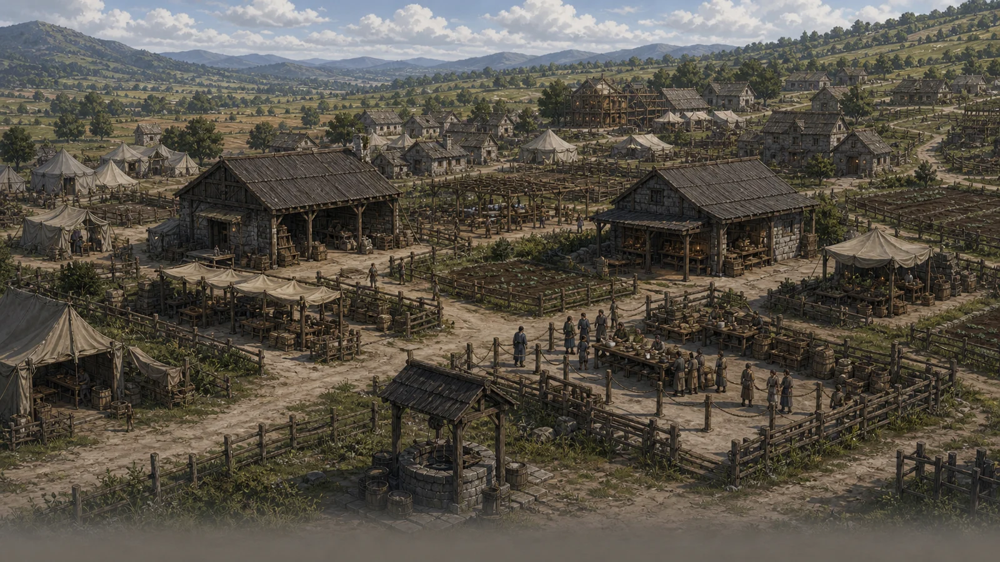

VIRETH 5083 STORY ARCHIVE
내 시작상황과 이어지는 이야기를 읽어보세요.
편지, 장부, 공문과 사건 기록 속에서 비레스의 이름과 생활 방식을 알아갈 수 있습니다.
CHOOSE YOUR OPENING
어떤 장면에서 이야기를 시작할까요?
마음에 드는 장면을 고르면 그 상황과 맞닿은 네 편을 바로 읽을 수 있습니다.

VIRETH 5083 STORY ARCHIVE
편지, 장부, 공문과 사건 기록 속에서 비레스의 이름과 생활 방식을 알아갈 수 있습니다.
CHOOSE YOUR OPENING
마음에 드는 장면을 고르면 그 상황과 맞닿은 네 편을 바로 읽을 수 있습니다.